践行"降噪"与"即时"的核心设计哲学，通过优化实时预警反馈机制与营销任务流，让系统成为一线员工的"智慧伴侣"。
网点通是银行线下网点的核心作业工具，覆盖全国数千个网点。 原有系统信息过载严重，一线员工在繁忙的业务中难以快速获取关键信息。
业务信息过载导致员工注意力分散；实时预警机制不够灵敏； 营销任务流与日常作业流冲突，影响服务体验。
践行"降噪"与"即时"的核心设计哲学。 通过优化实时预警反馈机制与营销任务流，重新定义信息优先级， 让系统真正成为一线员工的"智慧伴侣"而非负担。
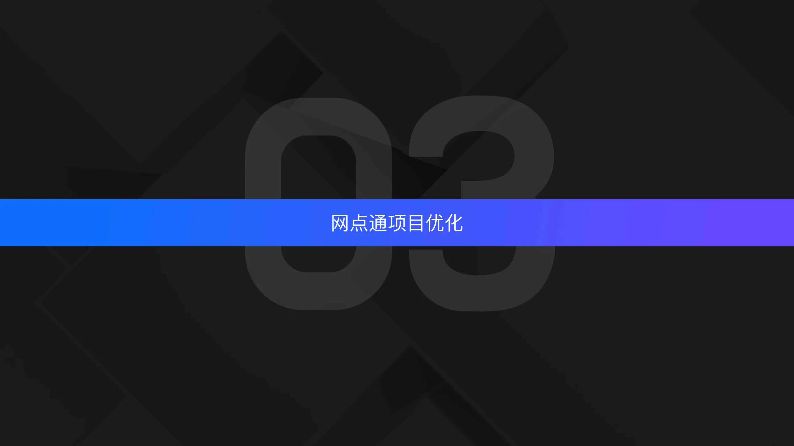
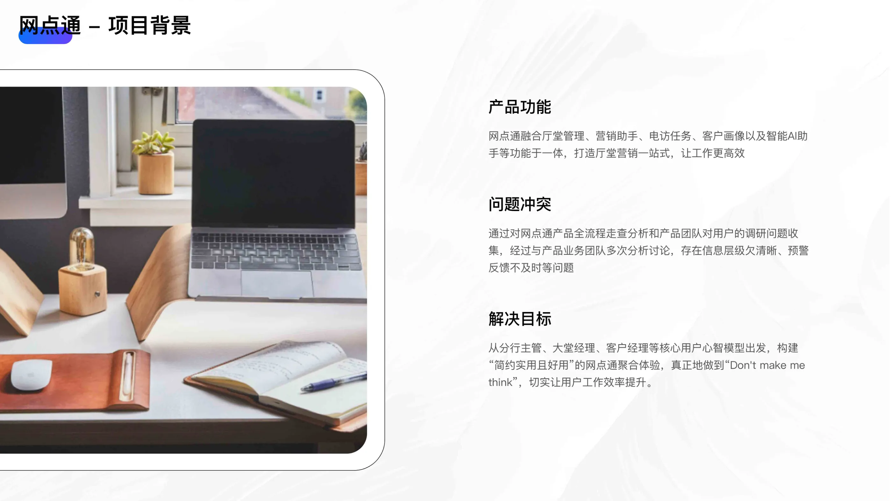
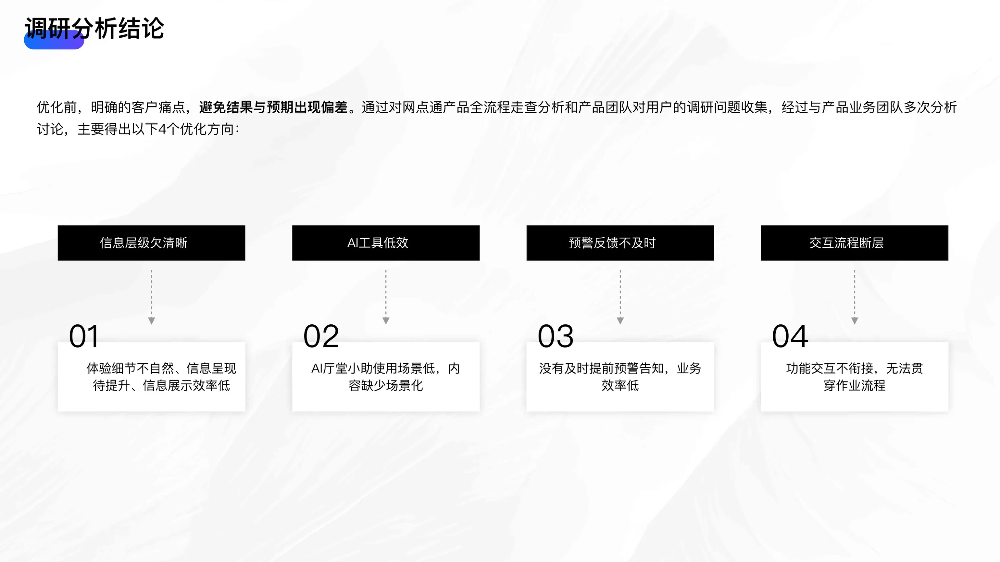
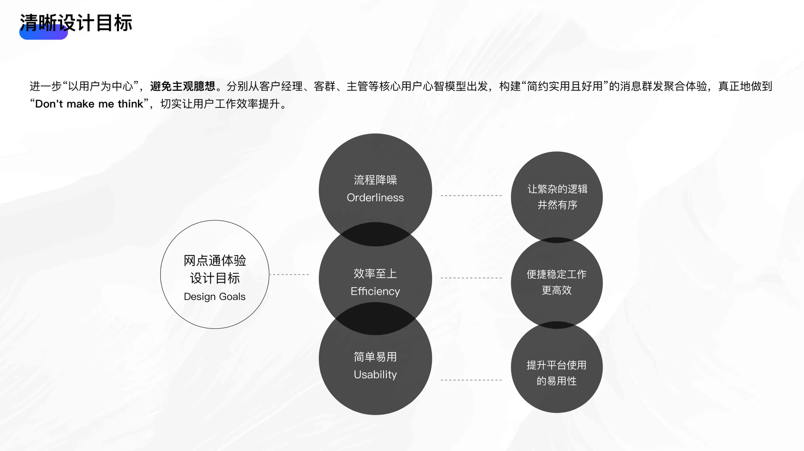
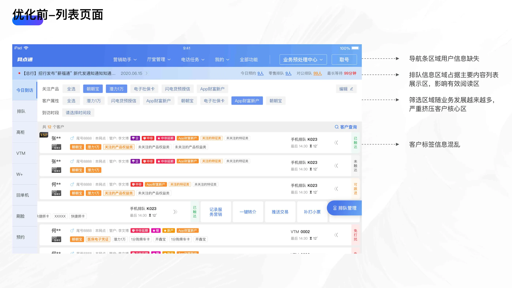
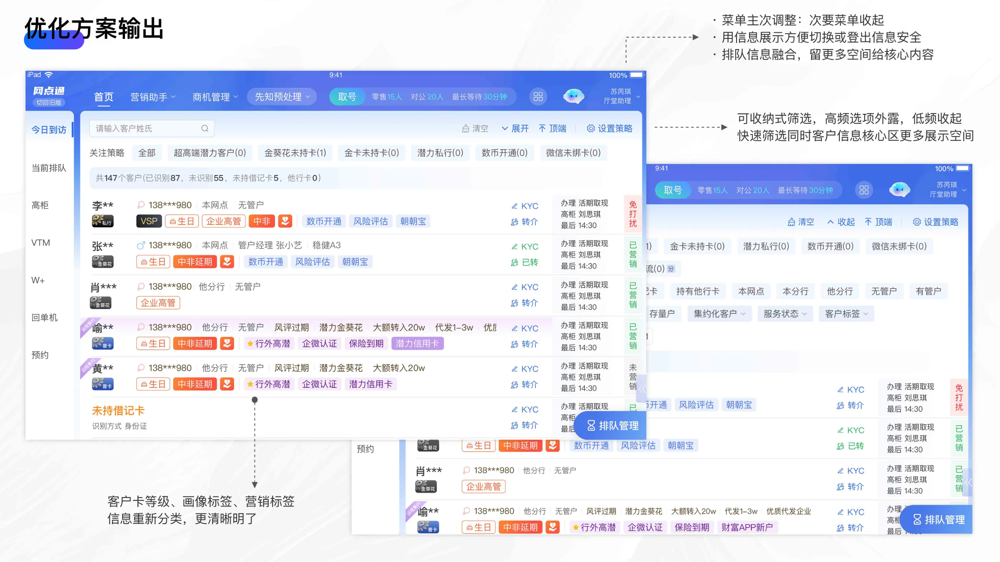
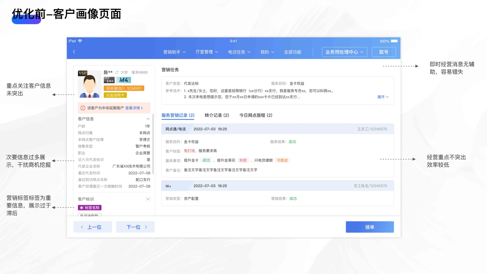
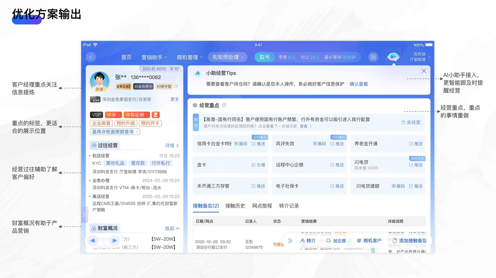
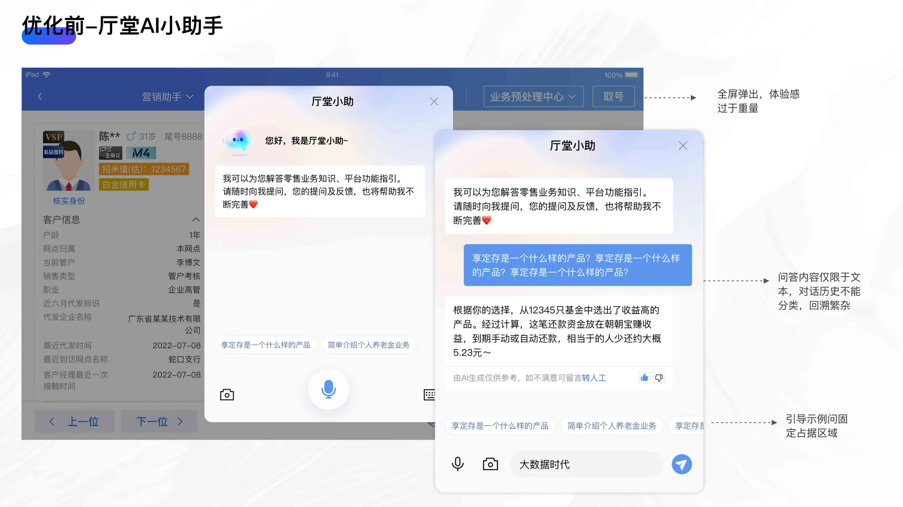
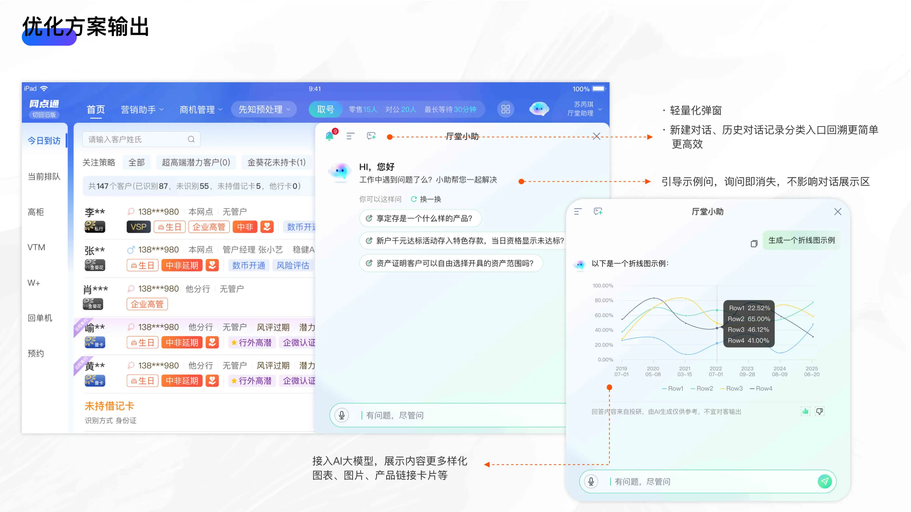
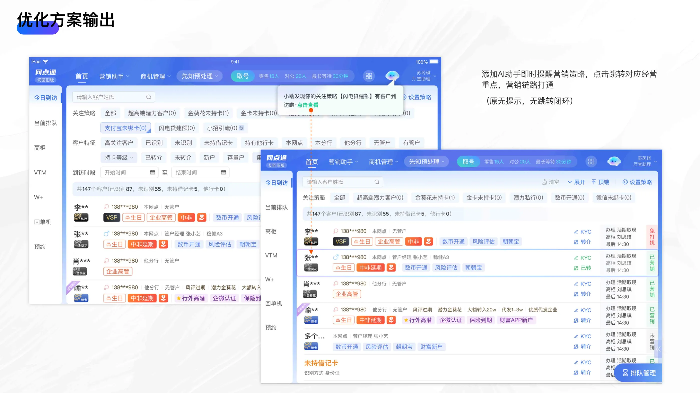